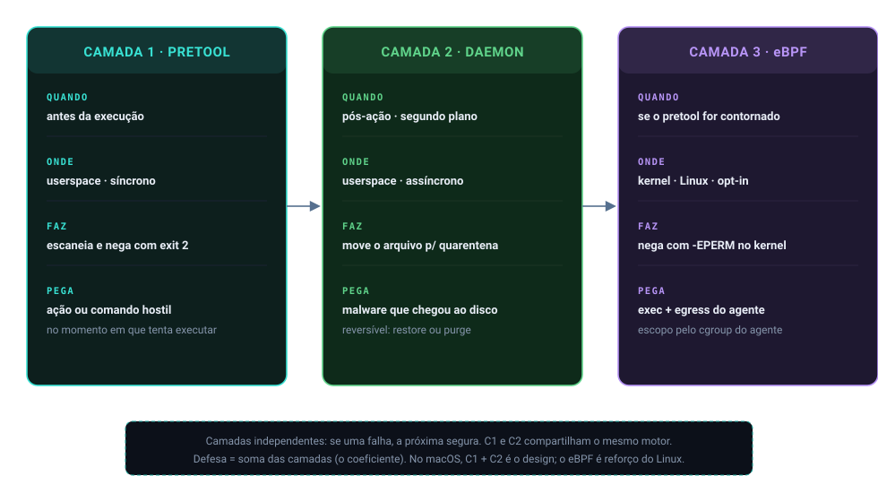

Início/Visão geral
síntese · o sistema convergindoVisão geral: o sistema inteiro convergindo
A visão geral fecha a jornada juntando tudo num quadro só: as camadas, o pipeline que escreve o veredito e o caminho que um comando percorre do agente até o exit 2, antes de executar.
Instrução educada no prompt não contém um agente de IA. O Nemesis intercepta a ação antes dela acontecer (hook pretool, write-time), escaneia o conteúdo e o comando, e nega com exit 2 se for hostil. Em paralelo, um daemon observa o filesystem e move malware confirmado para a quarentena. No Linux, uma camada eBPF no kernel segura exec e rede como backstop. A proteção não é um número de detectores: é a soma das camadas, o chamado coeficiente.
As três camadas
Defesa em profundidade significa camadas independentes: se uma falha ou está em manutenção, a próxima ainda contém. São três.
scan_content; a camada 3 (eBPF) é um backstop independente no kernel.Por que importa
As camadas 1 e 2 usam o mesmo motor de conteúdo, então o veredito de segurança é idêntico para bytes idênticos, seja na hora da escrita (pretool) ou no filesystem (daemon). Isso está declarado e verificado no próprio código: a fonte única de regras de conteúdo é a denylist-defender.json embutida, aplicada pela camada de regex e compartilhada pelas duas camadas.
Como se correlaciona: o caminho do comando
O fluxo que amarra os dez grupos é este. O agente pede uma ação. O pretool a traduz (o nome da ferramenta vira uma intenção, pre_run_command / pre_write_code), passa o conteúdo pelo motor, e o motor devolve uma severidade. Se for bloqueio, o processo sai com exit 2, e a IDE entende isso como "negado". Se um arquivo hostil escapou para o disco, o daemon o encontra e o move para a quarentena. No Linux, se alguém tentar executar um binário destrutivo, o eBPF nega no kernel com -EPERM, mesmo que o pretool esteja desconectado.


Como o Nemesis aplica
O orquestrador é a função scan_content. Ela roda os estágios em ordem e delega a decisão final a compute_severity.
pub fn scan_content(path: &Path, content: &[u8]) -> DefenderResult {
if is_path_excluded(path) { /* early return Clean */ }
let language = detect_language(path);
let mut all_violations = Vec::new();
// Layer 1: byte (BiDi/PUA/homoglyph/zero-width) · 4 sub-scans
// Layer 2: entropia (Shannon)
// Layer 3: regex (denylist-defender.json embutida)
// Layer 4: manifesto · 4.5 ide_config · 4.6 exfil_chain
// Layer 5: AST (tree-sitter) · Layer 6: decoder recursivo (máx 3)
all_violations.retain(|v| !allowlist_loader::is_allowlisted(&v.evidence));
let severity = compute_severity(&all_violations);
DefenderResult { severity, violations: all_violations, scan_depth, path, language }
}A arquitetura de crates é um workspace Rust com quatro membros: nemesis-defender (motor + daemon + CLI), ebpf-kernel (Linux), nemesis-doctor (diagnóstico) e ast-linters. O pacote raiz nemesis está na versão 8.2.0 e produz os binários de hook.
nemesis v8.2.0
Decisões e limites
A ordem comentada em scanner/mod.rs (seis camadas) difere da execução real em lib.rs: na prática o byte tem quatro sub-scans e ainda entram ide_config e exfil_chain antes da AST. O código manda, e a diferença está explicada no grupo 5. O daemon é security-only: qualidade se resolve bloqueando a escrita (reversível), jamais deletando (irreversível), detalhe no grupo 9.
E no macOS não há camada de kernel: com o pretool desligado, nada contém; no Linux, o eBPF cobre. Nenhuma proteção é assumida onde não existe.
Auto-checagem
As camadas pretool e daemon podem divergir no veredito de segurança?
Não para o mesmo conteúdo: ambas chamam scan_content, cuja fonte de regras de segurança é única (denylist-defender.json via camada de regex). A única divergência legítima é a camada de qualidade, exclusiva do pretool no write-time.
O que é o "coeficiente de proteção" e por que não é a contagem de visitors?
É a soma das camadas independentes (pretool, daemon, eBPF) e das taxonomias de cada uma (denylist embutida, heurísticas de scanner, visitors AST, denylists de comando, allowlist de egress). Visitor é só um método de detecção; contar visitors subconta a proteção real em ordem de grandeza.
Desligando o pretool no Linux, sobra alguma proteção?
Não. O eBPF segue como backstop no kernel: nega exec de comando destrutivo e conexão fora da allowlist com -EPERM, independente do hook da IDE. No macOS, porém, não há esse backstop.
Para ir além
- OWASP Proactive Controls sobre defesa em camadas.
- The Rust Book, Cargo Workspaces.
- ebpf.io, o que é eBPF.
Citações verificadas contra o repositório. Voltar ao índice.